Equilibrio térmico
1a)
Se añaden 100 g de agua a 70 ºC a un calorimetro que
contiene 400 g de agua a 20ºC. Determina la temperatura de equilibrio
b)
¿Qué cantidad de agua habría sido necesario añadir
para que la temperatura de equilibrio fuera
de 50 ºC?
Solución
El agua fria (m1 = 400 g, c = 1 cal/g ºC) sube su temperatura desde t1 = 20 ºC hasta t
El agua caliente (m2 = 100 g, c = 1 cal/g ºC) baja su temperatura desde t2 = 70 ºC hasta t
 |
|
Principio de la calorimetría:
$$\begin{aligned}&Q_g+Q_p=0\\[6pt] &m_1\,c\,(t-t_1)+m_2\,c\,(t-t_2)=0\\[6pt] &t=\frac{m_1\,t_1+m_2\,t_2}{m_1+m_2}=\frac{400\ \mathrm{g}\;20\ \mathrm{^\circ C}+100\ \mathrm{g}\;70\ \mathrm{^\circ C}}{(400+100)\ \mathrm{g}}=30\ \mathrm{^\circ C}\end{aligned}$$


El agua fria (m1 = 400 g, c = 1 cal/g ºC) sube su temperatura desde t1 = 20 ºC hasta t = 50 ºC
El agua caliente (m2, c = 1 cal/g ºC) baja su temperatura desde t2 = 70 ºC hasta t = 50 ºC
|
|
|
Principio de la calorimetría:
$$\begin{aligned}&Q_g+Q_p=0\\[6pt] &m_1\,c\,(t-t_1)+m_2\,c\,(t-t_2)=0\\[6pt] &m_2=-\frac{m_1\,(t-t_1)}{(t-t_2)}=-\frac{400\ \mathrm{g}\,(50\ \mathrm{^\circ C}-20\ \mathrm{^\circ C})}{(50\ \mathrm{^\circ C}-70\ \mathrm{^\circ C})}=600\ \mathrm{g}\end{aligned}$$
2Un calorímetro, de capacidad
calorífica despreciable, contiene 440 g de agua a 9 ºC. Se
introduce en el agua un trozo de hierro de 50 g a 90 ºC y cuando
se alcanza el equilibrio la temperatura es de 10 ºC. Calcula
el calor específico del hierro
Solución
El agua (m1 = 440 g, c1 = 1 cal/g ºC) sube su temperatura desde t1 = 9 ºC hasta t = 10 ºC
El calorímetro también sube desde t1 = 9 ºC hasta t = 10 ºC pero el calor que toma es despreciable frente a los otros
El trozo de hierro (m2 = 50 g, c2) bajará su temperatura desde t2 = 90 ºC hasta t = 10 ºC
|
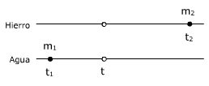 |
|
Principio de la calorimetría:
$$\begin{aligned}&Q_g+Q_p=0\\[6pt] &m_1\,c_1\,(t-t_1)+m_2\,c_2\,(t-t_2)=0\\[6pt] &c_2=-\frac{m_1\,c_1\,(t-t_1)}{m_2\,(t-t_2)}=\frac{440\ \mathrm{g}\;1\ \mathrm{cal/g\,{}^\circ C}\,(10\ \mathrm{^\circ C}-9\ \mathrm{^\circ C})}{50\ \mathrm{g}\,(10\ \mathrm{^\circ C}-90\ \mathrm{^\circ C})}=0{,}11\ \mathrm{\frac{cal}{g\,{}^\circ C}}\end{aligned}$$
3En un vaso calorimétrico
de cobre cuya masa es de 40 g se ponen 380 g de alcohol; el conjunto está
a una temperatura de 8 ºC. Se introduce en el alcohol un trozo de
cobre de 122 g a la temperatura de 50 ºC. La temperatura de equilibrio
es 10 ºC.
Sabiendo que el calor específico del cobre es: 0.095 cal/g ºC,
calcula el calor específico del alcohol
Solución
El alcohol (m1 = 380 g, c1) sube su temperatura desde t1 = 8 ºC hasta t = 10 ºC
El calorímetro (m0 = 40 g, c2 = 0.095 cal/g ºC) también sube desde t1 = 8 ºC hasta t = 10 ºC
El cobre (m2 = 122 g, c2 = 0.095 cal/g ºC) baja desde t2 = 50 ºC hasta t = 10 ºC
|
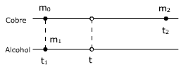 |
|
Principio de la calorimetría:
$$\begin{aligned}&Q_g+Q_p=0\\[6pt] &m_1\,c_1\,(t-t_1)+m_0\,c_2\,(t-t_1)+m_2\,c_2\,(t-t_2)=0\\[6pt] &c_1=-\frac{m_0\,c_2\,(t-t_1)+m_2\,c_2\,(t-t_2)}{m_1\,(t-t_1)}=-\frac{c_2}{m_1}\left(m_0+\frac{m_2\,(t-t_2)}{(t-t_1)}\right)\\[6pt] &c_1=-0{,}095\ \mathrm{\frac{cal}{g\,{}^\circ C}}\;\frac{1}{380\ \mathrm{g}}\left(40\ \mathrm{g}+\frac{122\ \mathrm{g}\,(10\ \mathrm{^\circ C}-50\ \mathrm{^\circ C})}{(10\ \mathrm{^\circ C}-8\ \mathrm{^\circ C})}\right)=0{,}6\ \mathrm{\frac{cal}{g\,{}^\circ C}}\end{aligned}$$
|
4100 g de aleación de
oro y cobre a la temperatura de 75.5 ºC se introducen en un calorímetro
(Equi-valente en agua: 12 g) que contiene 490 g de agua a 25 ºC;
la temperatura de equilibrio térmico es 25.5 ºC Calcular la
composición de la aleación.
Calores específicos: Oro: 0.031 cal/g ºC, Cobre: 0.095 cal/g
ºC
Solución
El agua y el calorimetro (m1 = 490 g, m0 = 12 g, c1 = 1 cal/g ºC ) suben su temperatura desde t1 = 25 ºC hasta t = 25.5 ºC
El oro (m2, c2 = 0.031 cal/g ºC) baja desde t2 = 75.5 ºC hasta t = 25.5 ºC
El cobre (M - m2, c2 = 0.095 cal/g ºC, M = 100 g) baja desde t2 = 75.5 ºC hasta t = 25.5 ºC
|
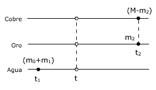 |
|
Principio de la calorimetría:
$$\begin{aligned}&Q_g+Q_p=0\\[6pt] &(m_1+m_0)\,c_1\,(t-t_1)+m_2\,c_2\,(t-t_2)+(M-m_2)\,c_3\,(t-t_2)=0\\[6pt] &\htmlData{pc-ac=ac5}{\boxed{m_2=\frac{(m_1+m_0)\,c_1\,(t-t_1)+M\,c_3\,(t-t_2)}{(c_3-c_2)\,(t-t_2)}}}\\[6pt] &m_2=\frac{(490\ \mathrm{g}+12\ \mathrm{g})\;1\ \mathrm{cal/g\,{}^\circ C}\,(25{,}5\ \mathrm{^\circ C}-25\ \mathrm{^\circ C})+100\ \mathrm{g}\;0{,}095\ \mathrm{cal/g\,{}^\circ C}\,(25{,}5\ \mathrm{^\circ C}-75\ \mathrm{^\circ C})}{(0{,}095\ \mathrm{cal/g\,{}^\circ C}-0{,}031\ \mathrm{cal/g\,{}^\circ C})\,(25{,}5\ \mathrm{^\circ C}-75\ \mathrm{^\circ C})}\\[6pt] &m_2=69{,}2\ \mathrm{g}\end{aligned}$$
La cantidad de cobre será entonces: 100 - 69.2 = 30.8 g
5En un calorímetro, equivalente
en agua: 10 g, hay 1 kg de hielo a –10 ºC ¿Cuántos
gramos de vapor de agua a 100 ºC hay que introducir en él
para que la temperatura final sea de 40 ºC?
Datos: Hielo: c = 0.5 cal/g ºC,
cf = 80 cal/g Agua: cv = 540 cal/g
Solución
El hielo (m1 = 1000 g, c1 = 0,5 cal/g ºC) a temperatura t1 = -10 ºC se calienta hasta 0 ºC, se funde (cf = 80 cal/g) y el agua resultante (m1 = 1000 g, c2 = 1 cal/g ºC) sube su temperatura desde 0 ºC hasta t = 40 ºC
El vapor de agua se condensa (m2, cc = -540 cal/g) y el agua resultante (m2, c2 = 1 cal/g ºC) baja su temperatura desde 100 ºC hasta t = 40 ºC
El calorímetro (m0 = 10 g, c0 = 1 cal/g ºC) sube desde t1 = -10 ºC hasta t = 40 ºC. El agua equivalen-te al calorímetro no participa en los cambios de estado
| 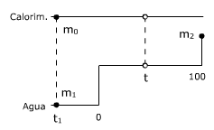 |
|
Principio de la calorimetría:
$$\begin{aligned}&Q_g+Q_p=0\\[6pt] &-m_1\,c_1\,t_1+m_1\,c_f+m_1\,c_2\,t+m_0\,c_2\,(t-t_1)+m_2\,c_c+m_2\,c_2\,(t-t_2)=0\\[6pt] &m_2=\frac{m_1\,(c_1\,t_1-c_f-c_2\,t)-m_0\,c_2\,(t-t_1)}{c_c+c_2\,(t-t_2)}\end{aligned}$$
Sustituyendo valores:
$$\begin{aligned}&m_2=\frac{1000\ \mathrm{g}\left(0{,}5\ \mathrm{cal/g\,{}^\circ C}\,(-10\ \mathrm{^\circ C})-80\ \mathrm{cal/g}-1\ \mathrm{cal/g\,{}^\circ C}\;40\ \mathrm{^\circ C}\right)-10\ \mathrm{g}\;1\ \mathrm{cal/g\,{}^\circ C}\,\left(40\ \mathrm{^\circ C}-(-10\ \mathrm{^\circ C})\right)}{(-540\ \mathrm{cal/g})+1\ \mathrm{cal/g\,{}^\circ C}\,(40\ \mathrm{^\circ C}-100\ \mathrm{^\circ C})}\\[6pt] &m_2=209\ \mathrm{g}\end{aligned}$$
6En un recinto térmicamente
aislado hay 1 kg de agua a 12 ºC. En ella se introducen 150 g de
cobre a 200 ºC ¿Qué cantidad de hielo fundente habrá
que añadir para que, una vez fundido, la temperatura final sea
de 0 ºC?
Datos: Cobre: c = 0.095 cal/g ºC Hielo: cf = 80 cal/g
Solución
Hielo fundente quiere decir hielo a 0 ºC
El hielo (m1, cf = 80 cal/g ) se funde convirtiéndose en agua a 0 ºC
El agua (m2 = 1000 g, c2 = 1 cal/g ºC) baja su temperatura desde t2 = 12 ºC hasta t = 0 ºC
El cobre (m3, c3 = 0.095 cal/g ºC) baja desde t3 = 200 ºC hasta t = 0 ºC
|
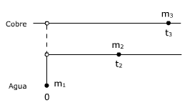 |
|
Principio de la calorimetría:
$$\begin{aligned}&Q_g+Q_p=0\\[6pt] &m_1\,c_f-m_2\,c_2\,t_2-m_3\,c_3\,t_3=0\\[6pt] &m_1=\frac{m_2\,c_2\,t_2+m_3\,c_3\,t_3}{c_f}\\[6pt] &m_1=\frac{1000\ \mathrm{g}\;1\ \mathrm{cal/g\,{}^\circ C}\;12\ \mathrm{^\circ C}+150\ \mathrm{g}\;0{,}095\ \mathrm{cal/g\,{}^\circ C}\;200\ \mathrm{^\circ C}}{80\ \mathrm{cal/g}}=186\ \mathrm{g}\end{aligned}$$
7Determina el estado de
equilibrio cuando, en un calorímetro, se pongan:
a)
2 kg de agua a 50 ºC con 1 kg de hielo a -5 ºC
b)
2 kg de agua a 30 ºC con 1 kg de hielo a -5 ºC
c)
1 kg de agua a 20 ºC con 10 kg de hielo a -30 ºC
d)
1 kg de agua a 20 ºC con 6 kg de hielo a -30 ºC
Datos del hielo. c = 0.5 cal/g ºC, Cf = 80 cal/g
Solución
Tanteo previo
Supongamos que la temperatura de equilibrio fuera 0 ºC (Sin cambios de fase)
$$\begin{aligned}&Q_g=1000\ \mathrm{g}\;0{,}5\ \mathrm{\frac{cal}{g\,{}^\circ C}}\,\left(0-(-5)\right)\ \mathrm{^\circ C}=2500\ \mathrm{cal}\\[6pt] &Q_p=2000\ \mathrm{g}\;1\ \mathrm{\frac{cal}{g\,{}^\circ C}}\,(0-50)\ \mathrm{^\circ C}=-100000\ \mathrm{cal}\end{aligned}$$
No hay equilibrio porque hay más calor perdido que ganado
Para aumentar el calor ganado y disminuir el perdido tendrá que fundirse hielo a 0º. La fusión de 1000 g de hielo requiere ganar 80000 calorias que sumadas a las 2500 ya ganadas produce un total de 82500 calorias, todavía por debajo de las 100000 calorías perdidas.
Para aumentar más el galor ganado el agua procedente de la fusión del hielo tendrá subir de tempe-ratura y el agua caliente no se enfriará hasta 0 ºC
El hielo (m1 = 1000 g, c1 = 0.5 cal/g ºC) sube su temperatura desde t1 = -5ºC hasta 0 ºC, se funde (cf = 80 cal/g) y el agua resultante (m1 = 1000 g, c2 = 1 cal/g ºC) sube su temperatura desde 0 ºC hasta t
El agua caliente (m2 = 2000 g, c2 = 1 cal/g ºC) baja su temperatura desde t2 = 50 ºC hasta t
|
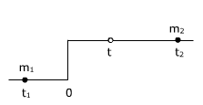 |
|
Principio de la calorimetría:
$$\begin{aligned}&Q_g+Q_p=0\\[6pt] &-m_1\,c_1\,t_1+m_1\,c_f+m_1\,c_2\,t+m_2\,c_2\,(t-t_2)=0\\[6pt] &\htmlData{pc-ac=ac6}{\boxed{t=\frac{m_1\,(c_1\,t_1-c_f)+m_2\,c_2\,t_2}{(m_1+m_2)\,c_2}}}\end{aligned}$$
Sustituyendo valores:
$$t=\frac{1000\ \mathrm{g}\left(0{,}5\ \mathrm{cal/g\,{}^\circ C}\,(-5\ \mathrm{^\circ C})-80\ \mathrm{cal/g}\right)+2000\ \mathrm{g}\;1\ \mathrm{cal/g\,{}^\circ C}\;50\ \mathrm{^\circ C}}{(1000\ \mathrm{g}+2000\ \mathrm{g})\;1\ \mathrm{cal/g\,{}^\circ C}}=5{,}83\ \mathrm{^\circ C}$$
Tanteo previo
Supongamos que la temperatura de equilibrio fuera 0 ºC (Sin cambios de fase)
$$\begin{aligned}&Q_g=1000\ \mathrm{g}\;0{,}5\ \mathrm{\frac{cal}{g\,{}^\circ C}}\,\left(0-(-5)\right)\ \mathrm{^\circ C}=2500\ \mathrm{cal}\\[6pt] &Q_p=2000\ \mathrm{g}\;1\ \mathrm{\frac{cal}{g\,{}^\circ C}}\,(0-30)\ \mathrm{^\circ C}=-60000\ \mathrm{cal}\end{aligned}$$
No hay equilibrio porque hay más calor perdido que ganado
Para aumentar el calor ganado y disminuir el perdido tendrá que fundirse hielo a 0º. La fusión de 1000 g de hielo requiere ganar 80000 calorias que sumadas a las 2500 ya ganadas produce un total de 82500 calorias, más que las 60000 calorías perdidas.
Se fundira solo una parte del hielo y quedará todo a 0ºC
El hielo (m1 = 1000 g, c1 = 0.5 cal/g ºC) sube su temperatura desde t1 = -5ºC hasta 0 ºC y una parte del mismo se funde (x, cf = 80 cal/g)
El agua caliente (m2 = 2000 g, c2 = 1 cal/g ºC) baja su temperatura desde t2 = 30 ºC hasta t
|
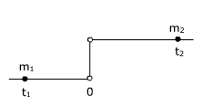 |
|
Principio de la calorimetría:
$$\begin{aligned}&Q_1+Q_2=0\\[6pt] &-m_1\,c_1\,t_1+x\,c_f-m_2\,c_2\,t_2=0\\[6pt] &x=\frac{m_1\,c_1\,t_1+m_2\,c_2\,t_2}{c_f}\\[6pt] &x=\frac{1000\ \mathrm{g}\;0{,}5\ \mathrm{cal/g\,{}^\circ C}\,(-5\ \mathrm{^\circ C})+2000\ \mathrm{g}\;1\ \mathrm{cal/g\,{}^\circ C}\;30\ \mathrm{^\circ C}}{80\ \mathrm{cal/g}}=719\ \mathrm{g}\end{aligned}$$
En el equilibrio quedan 2719 g de agua y 281 g de hielo, a 0 ºC
Tanteo previo
Supongamos que la temperatura de equilibrio fuera 0 ºC (Sin cambios de fase)
$$\begin{aligned}&Q_g=10000\ \mathrm{g}\;0{,}5\ \mathrm{\frac{cal}{g\,{}^\circ C}}\,\left(0-(-30)\right)\ \mathrm{^\circ C}=150000\ \mathrm{cal}\\[6pt] &Q_p=1000\ \mathrm{g}\;1\ \mathrm{\frac{cal}{g\,{}^\circ C}}\,(0-20)\ \mathrm{^\circ C}=-20000\ \mathrm{cal}\end{aligned}$$
No hay equilibrio porque hay más calor ganado que perdido
Para disminuir el el calor ganado y aumentar el perdido tendrá que congelarse agua a 0º C. La conge-lación de 1000 g de agua libera 80000 calorías que sumadas a las 20000 perdidas antes produce un total de 100000 calorias, menos que las 150000 calorías ganadas
Para aumentar más el galor perdido el hielo procedente de la congelación del agua tendrá que bajar de temperatura y el hielo no se calentará hasta 0 ºC
El hielo (m1 = 10000 g, c1 = 0.5 cal/g ºC) sube su temperatura desde t1 = -30 ºC hasta t
El agua caliente (m2 = 1000 g, c2 = 1 cal/g ºC) baja su temperatura desde t2 = 20 ºC hasta t, se con-gela (cs = -80 cal/g) y el hielo formado (m2 = 1000 g, c1 = 0.5 cal/g ºC) baja su temperatura desde 0 ºC hasta t
|
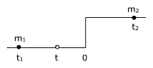 |
|
Principio de la calorimetría:
$$\begin{aligned}&Q_g+Q_p=0\\[6pt] &m_1\,c_1\,(t-t_1)-m_2\,c_2\,t_2+m_2\,c_s+m_2\,c_1\,t=0\\[6pt] &\htmlData{pc-ac=ac7}{\boxed{t=\frac{m_1\,c_1\,t_1+m_2\,(c_2\,t_2-c_s)}{(m_1+m_2)\,c_1}}}\end{aligned}$$
Sustituyendo valores:
$$t=\frac{20000\ \mathrm{g}\;0{,}5\ \mathrm{cal/g\,{}^\circ C}\,(-20\ \mathrm{^\circ C})+1000\ \mathrm{g}\,\left(1\ \mathrm{cal/g\,{}^\circ C}\;20\ \mathrm{^\circ C}-(-80\ \mathrm{cal/g})\right)}{(20000\ \mathrm{g}+1000\ \mathrm{g})\;0{,}5\ \mathrm{cal/g\,{}^\circ C}}=-9{,}52\ \mathrm{^\circ C}$$
Tanteo previo
Supongamos que la temperatura de equilibrio fuera 0 ºC (Sin cambios de fase)
$$\begin{aligned}&Q_g=6000\ \mathrm{g}\;0{,}5\ \mathrm{\frac{cal}{g\,{}^\circ C}}\,\left(0-(-30)\right)\ \mathrm{^\circ C}=90000\ \mathrm{cal}\\[6pt] &Q_p=1000\ \mathrm{g}\;1\ \mathrm{\frac{cal}{g\,{}^\circ C}}\,(0-20)\ \mathrm{^\circ C}=-20000\ \mathrm{cal}\end{aligned}$$
No hay equilibrio porque hay más calor ganado que perdido
Para aumentar el calor perdido y disminuir el ganado tendrá que congelarse agua a 0º. La congelación de 1000 g de agua libera 80000 calorias que sumadas a las 20000 ya perdidas produce un total de 100000 calorias, más que las 90000 calorías ganadas
Se congelará solo una parte del agua y quedará todo a 0ºC
El hielo (m1 = 6000 g, c1 = 0.5 cal/g ºC) sube su temperatura desde t1 = -30 ºC hasta 0 ºC
El agua caliente (m2 = 1000 g, c2 = 1 cal/g ºC) baja su temperatura desde t2 = 20 ºC hasta 0 ºC y una parte de ella (x, cc = -80 cal/g) se congela
|
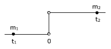 |
|
Principio de la calorimetría:
$$\begin{aligned}&Q_g+Q_p=0\\[6pt] &-m_1\,c_1\,t_1-m_2\,c_2\,t_2+x\,c_s=0\\[6pt] &x=\frac{m_1\,c_1\,t_1+m_2\,c_2\,t_2}{c_s}\\[6pt] &x=\frac{6000\ \mathrm{g}\;0{,}5\ \mathrm{cal/g\,{}^\circ C}\,(-30\ \mathrm{^\circ C})+1000\ \mathrm{g}\;1\ \mathrm{cal/g\,{}^\circ C}\;20\ \mathrm{^\circ C}}{(-80\ \mathrm{cal/g})}=875\ \mathrm{g}\end{aligned}$$
En el equilibrio quedan 125 g de agua y 6875 g de hielo, a 0 ºC
8En un calorímetro
(Equivalente en agua: 20 g) que contiene
200 g de hielo a -10 ºC se introducen 40 g de vapor de agua a 100
ºC. Determina el estado de equilibrio
Datos: Hielo. c = 0.5 cal/g ºC, Cf = 80 cal/g Agua:
cv = 540 cal/g
Solución
El agua equivalente al calorímetro no participa en los cambios de estado
Tanteo previo
Supongamos que la temperatura de equilibrio fuera 0 ºC (Sin cambiar de fase el hielo)
$$\begin{aligned}&Q_g=200\ \mathrm{g}\;0{,}5\ \mathrm{\frac{cal}{g\,{}^\circ C}}\,\left(0-(-10)\right)\ \mathrm{^\circ C}+20\ \mathrm{g}\;1\ \mathrm{\frac{cal}{g\,{}^\circ C}}\,\left(0-(-10)\right)\ \mathrm{^\circ C}=1200\ \mathrm{cal}\\[6pt] &Q_p=40\ \mathrm{g}\left(-540\ \mathrm{\frac{cal}{g}}\right)+40\ \mathrm{g}\;1\ \mathrm{\frac{cal}{g\,{}^\circ C}}\,(0-100)\ \mathrm{^\circ C}=-25600\ \mathrm{cal}\end{aligned}$$
No hay equilibrio porque hay más calor perdido que ganado
Para aumentar el calor ganado y disminuir el perdido tendrá que fundirse hielo a 0º. La fusión de 200 g de hielo requiere ganar 16000 calorias que sumadas a las 1200 ya ganadas produce un total de 17200 calorias, todavía por debajo de las 25600 calorías perdidas.
Para aumentar más el galor ganado el agua procedente de la fusión del hielo tendrá subir de tempera-tura y el agua caliente procedente de la condensación del vapor no se enfriará hasta 0 ºC
El hielo (m1 = 200 g, c1 = 0.5 cal/g
ºC) sube su temperatura desde t1 = -10 ºC hasta 0
ºC, se funde (cf = 80 cal/g) y el agua formada (m1
= 200 g, c2 = 1 cal/g ºC) sube su temperatura desde
0 ºC hasta t
El calorímetro (m0 = 20 g c2 = 1 cal/ g ºC) sube su temperatura desde t1 = -10 ºC hasta t
El vapor de agua (m2 = 40 g, cc = -540 cal/g) se condensa y el agua formada (m2 = 40 g, c2 = 1 cal/g ºC) baja su temperatura desde t2 = 100 ºC hasta t
|
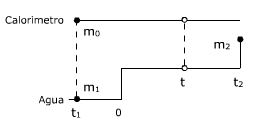 |
|
Principio de la calorimetría:
$$\begin{aligned}&Q_g+Q_p=0\\[6pt] &-m_1\,c_1\,t_1+m_1\,c_f+m_1\,c_2\,t+m_0\,c_2\,(t-t_1)+m_2\,c_c+m_2\,c_2\,(t-t_2)=0\\[6pt] &\htmlData{pc-ac=ac8}{\boxed{t=\frac{m_0\,c_2\,t_1+m_1\,(c_1\,t_1-c_f)+m_2\,(c_2\,t_2-c_c)}{(m_0+m_1+m_2)\,c_2}}}\end{aligned}$$
Sustituyendo valores:
$$t=\frac{20\ \mathrm{g}\;1\ \mathrm{cal/g\,{}^\circ C}\,(-10\ \mathrm{^\circ C})+200\ \mathrm{g}\left(0{,}5\ \mathrm{cal/g\,{}^\circ C}\,(-10\ \mathrm{^\circ C})-80\ \mathrm{cal/g}\right)}{(20+200+40)\ \mathrm{g}\;1\ \mathrm{cal/g\,{}^\circ C}}+\frac{40\ \mathrm{g}\left(1\ \mathrm{cal/g\,{}^\circ C}\;100\ \mathrm{^\circ C}-(-540\ \mathrm{cal/g})\right)}{(20+200+40)\ \mathrm{g}\;1\ \mathrm{cal/g\,{}^\circ C}}=32{,}3\ \mathrm{^\circ C}$$
9Un calorímetro contiene
100 g de agua a 10 ºC. Se añaden 150 g de agua y la temperatura
de equili-brio es de 52 ºC ¿Qué temperatura tenía
el agua añadida?
Solución
El agua fria (m1 = 100 g, c = 1 cal/g ºC) sube su temperatura desde t1 = 10 ºC hasta t = 52 ºC
El agua caliente (m2 = 150 g, c = 1 cal/g ºC) baja su temperatura desde t2 hasta t = 52 ºC
|
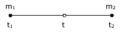 |
|
Principio de la calorimetría:
$$\begin{aligned}&Q_g+Q_p=0\\[6pt] &m_1\,c\,(t-t_1)+m_2\,c\,(t-t_2)=0\\[6pt] &(t-t_2)=-\frac{m_1\,(t-t_1)}{m_2}\;\rightarrow\;t_2=t+\frac{m_1\,(t-t_1)}{m_2}\\[6pt] &t_2=52\ \mathrm{^\circ C}+\frac{100\ \mathrm{g}\,(52\ \mathrm{^\circ C}-10\ \mathrm{^\circ C})}{150\ \mathrm{g}}=80\ \mathrm{^\circ C}\end{aligned}$$


10En un recinto aislado que contiene
2 kg de agua a 10 ºC se introduce hielo a 0 ºC y vapor de agua
a 100 ºC. Determina la relación entre las masas de hielo y
vapor sabiendo que la temperatura de equi-librio es 10 ºC. Datos:
Hielo: cf = 80 cal/g Agua: cv = 540
cal/g
Solución
El hielo (m1, cf = 80 cal/g) se funde y el agua resultante (m1, c2 = 1 cal/g ºC) sube su temperatura desde t1 = 0 ºC hasta t = 10 ºC
El vapor de agua se condensa (m2, cc = -540 cal/g) y el agua resultante (m2, c2 = 1 cal/g ºC) baja su temperatura desde t2 = 100 ºC hasta t = 10 ºC
El agua inicial (2 kg) no intercambia calor porque su temperatura no cambia, por tanto no interviene en los cálculos
|
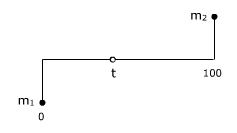 |
|
Principio de la calorimetría:
$$\begin{aligned}&Q_g+Q_p=0\\[6pt] &m_1\,c_f+m_1\,c_2\,t+m_2\,c_c+m_2\,c_2\,(t-t_2)=0\\[6pt] &m_1\,(c_f+c_2\,t)=-m_2\,\left(c_c+c_2\,(t-t_2)\right)\;\rightarrow\;\frac{m_1}{m_2}=-\frac{c_c+c_2\,(t-t_2)}{c_f+c_2\,t}\\[6pt] &\frac{m_1}{m_2}=-\frac{-540\ \mathrm{cal/g}+1\ \mathrm{cal/g\,{}^\circ C}\,(10\ \mathrm{^\circ C}-100\ \mathrm{^\circ C})}{80\ \mathrm{cal}+1\ \mathrm{cal/g\,{}^\circ C}\;10\ \mathrm{^\circ C}}=7\end{aligned}$$